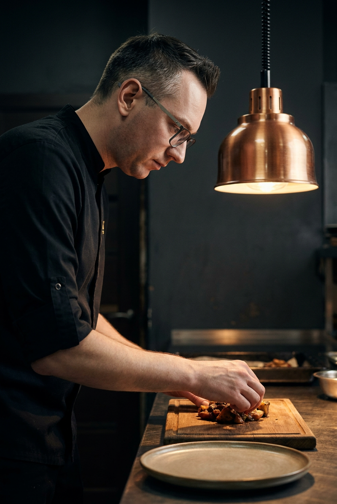
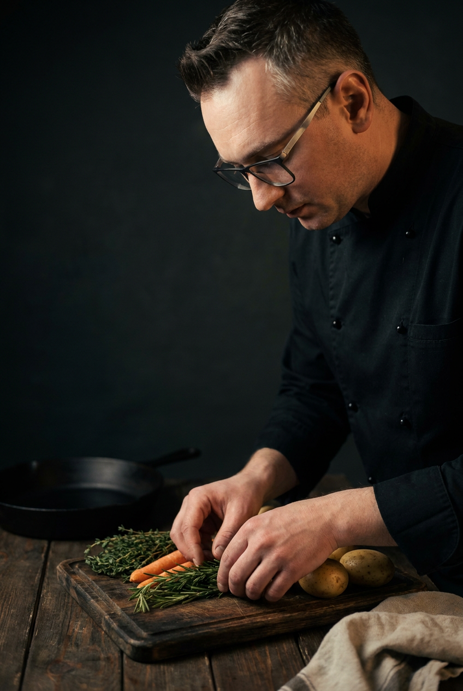
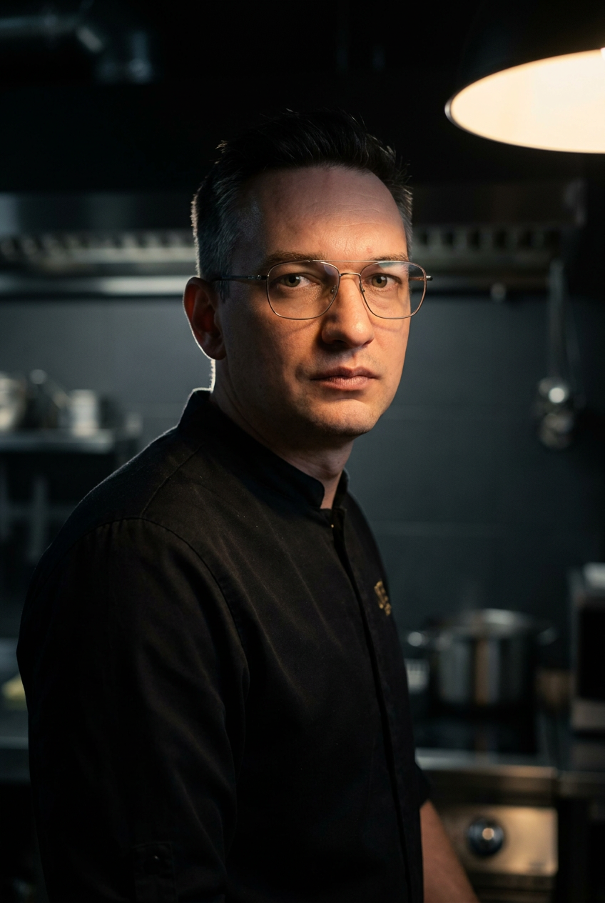
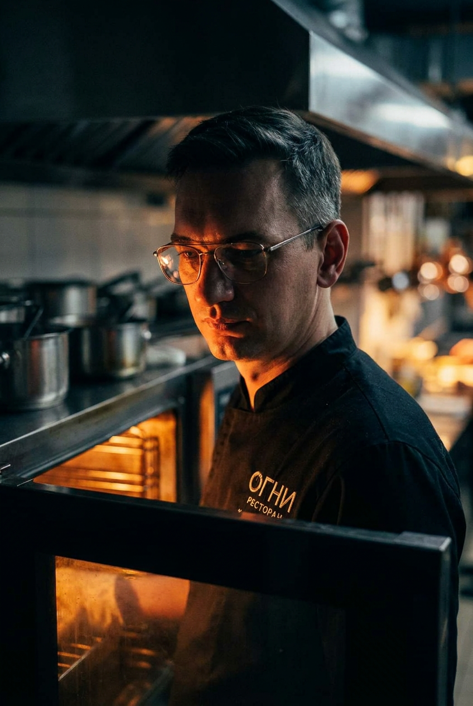
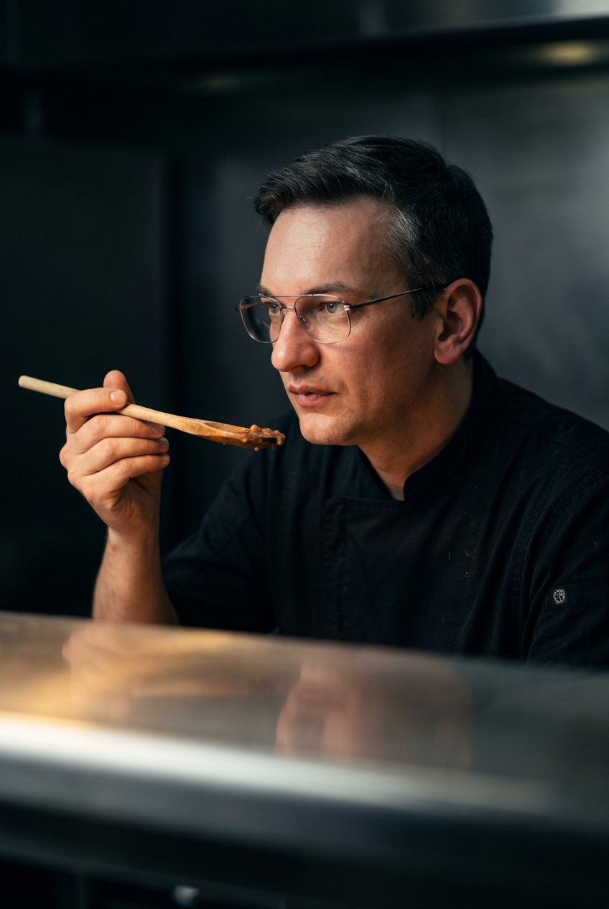
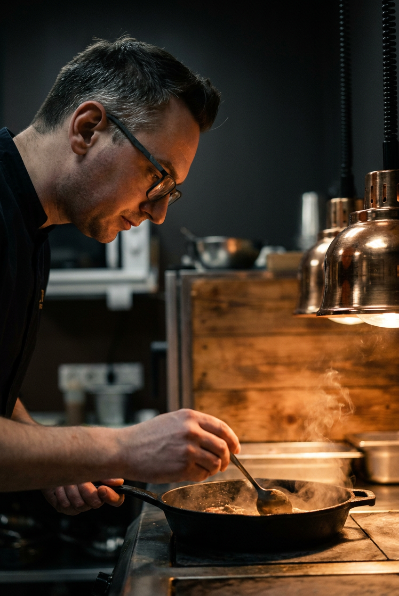
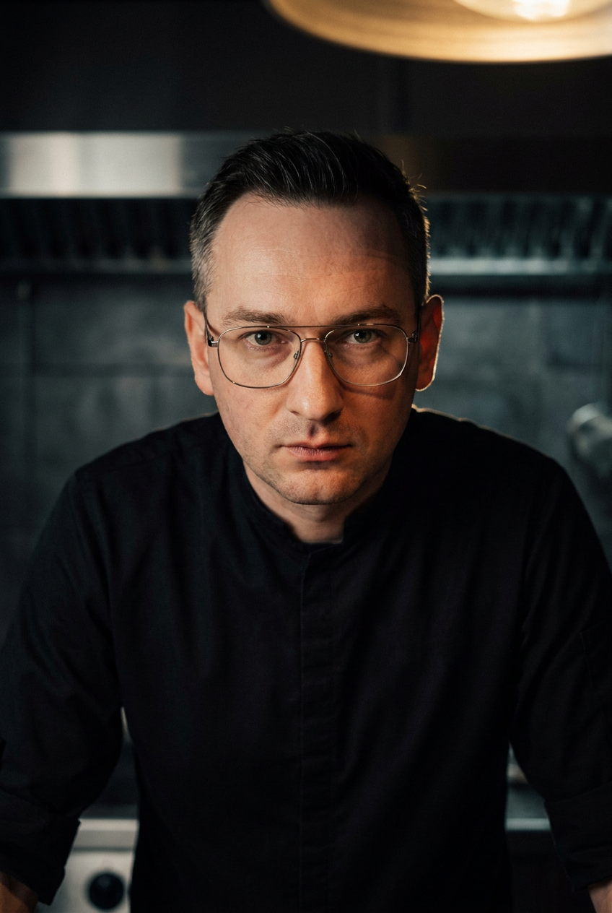
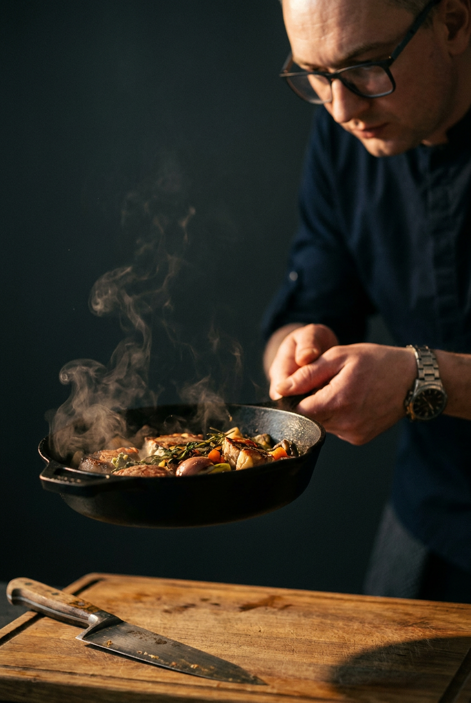
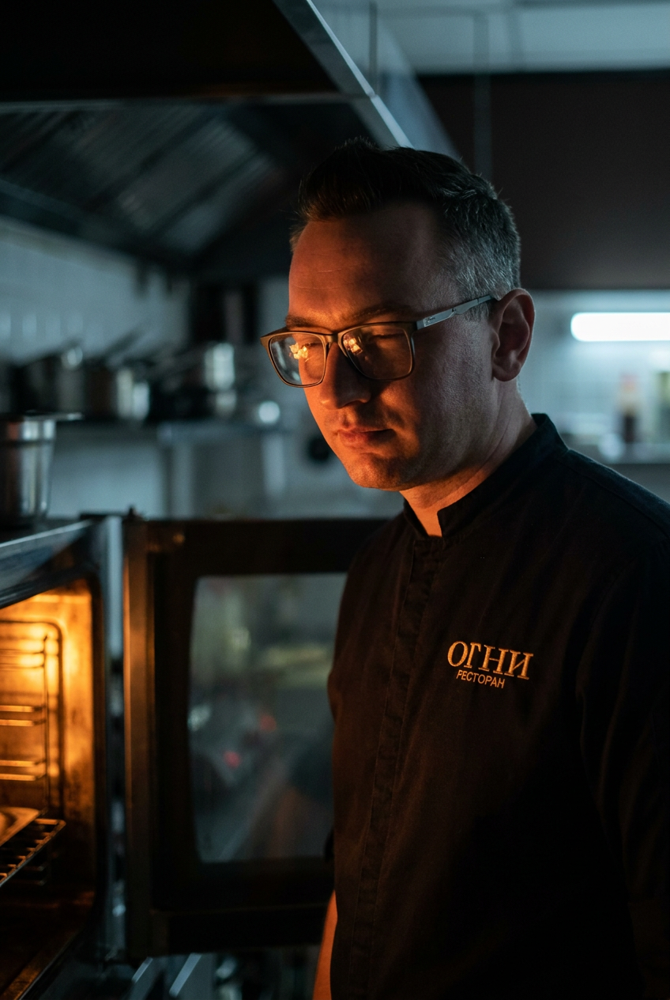

В финал идёт v1-01 profile-pan (медная лампа + чугун). Остальные 3 v1 + 3 v2 — мимо. LoRA не используем. Только Nano Banana Pro Edit.
Урок: face-reference из сауны (близкий план без очков) ухудшал identity, не улучшал. Лицо распарено/припухло — AI брал «после-баневую» форму. Возвращаюсь к одному студийному референсу.
Та же ДНК что v1-01: профиль/трёхчетверть + медный/тёплый свет + tactile materials (дерево/чугун/керамика) + charcoal background + без прямого взгляда. Один студийный референс.
Plating · с медной лампой
Профиль слева, медная лампа справа сверху. Максим раскладывает блюдо на деревянную доску, керамическая тарелка под ней. Очки. Чёрный китель. Сильный warm rim light на плече. Прямой кузен v1-01 — но другой момент работы (plating вместо стирки в чугуне).
Где использовать: Hero #1 alternative, либо Hero #4 (Signature dishes — момент сервировки).
Ingredients on cutting board · трёхчетверть
Трёхчетверть вправо. Максим работает с зеленью, морковью, картошкой на тёмной доске. Чугун в полумраке слева, льняное полотенце справа. Очки. Тёплый свет справа.
Где использовать: Hero #3 (Process — секция «руки + ингредиенты + материалы») или одна из process-секций.
После первого захода Олег прислал второе фото — фронтальный портрет без очков (близкий план). Это дало AI точную геометрию глаз/носа/скул.
Перегенерил 3 кадра с двумя референсами: студийный (китель + очки + контекст) + face (точная геометрия лица). Identity заметно ближе к Максиму чем в v1 — узкая челюсть, прямой нос, форма лица — в характере.
Честная оценка identity: ~75% сходство, не perfect 1:1. Если нужен 95%+ — это другой класс задачи (FLUX LoRA training: 5-10 фото Максима → ~$5-10, 30 мин обучения → потом неограниченные генерации с perfect identity).
Front editorial portrait
Фронтальный, прямой контакт с камерой, очки, спокойный сосредоточенный взгляд. Чёрный китель-стойка. Тёплый свет справа сверху, blurred kitchen background. Глаза, нос, челюсть — в характере Максима.
Где использовать: Hero #1 или Hero #6 (ABOUT MAXIM).
Fire glow at oven
У открытой духовки, fire glow освещает половину лица. Очки с тёплым отблеском. Видно лого «ОГНИ» на кителе. Атмосферный кадр для брендинга.
Где использовать: Hero alternative или first-screen video frame.
Tasting spoon
Профиль, сосредоточенный взгляд, деревянная ложка у рта — пробует. Очки. Брашед-стальная поверхность в передн.плане. Charcoal background.
Где использовать: Hero #2 (Philosophy section) или одна из Process-кадров — момент мастерства, тишины, дегустации.
⚠️ Олег отметил: «Похож только #1, остальные мимо.» В v1 был только один студийный референс — AI расходился по чертам лица. v2 выше — после добавления второго фото.
Profile · с медной лампой
Композиция: профиль слева, медная практическая лампа справа создаёт warm spill на лицо. Чугунная сковорода, деревянная столешница, чёрный китель.
Где использовать: Hero #1 — главный экран лендинга. Подходит для full-bleed с зачёркнутым именем сверху и тонкой строкой описания внизу.
Сильные стороны: профиль = кинематографично, медная лампа держит весь warm-tone концепта, чугун + дерево = tactile materials anchor. Identity полностью читается через очки.
Front · editorial portrait
Композиция: прямой взгляд в камеру, строгий serious focus, чёрный китель-стойка, фон расфокусированной кухни.
Где использовать: Hero #6 (ABOUT MAXIM) — левая половина или as-is. Альтернатива для Hero #1 если нужен прямой контакт глазами.
Сильные стороны: premium editorial vibe, кадр уровня Bon Appetit / Eater. Серьёзность без угрюмости. Сильный визуальный якорь — очки + взгляд.
Слабая сторона: rembrandt-эффект (треугольник на щеке) не очень выражен — свет более ровный. Менее «кинематографично» чем 01.
Hands + cast iron · process shot
Композиция: чугунная сковорода с паром в руках, нож на доске на переднем плане, Максим на втором плане — его очки и китель видны. Чёрный фон.
Где использовать: НЕ hero — идеально для секции #3 PROCESS как один из 4 process-кадров. Цикл огонь → нож → чугун → доска.
Сильные стороны: кадр-действие, пар держит storytelling, нож в первом плане = tactile depth. Identity на втором плане, не доминирует — это правильно для process-секции.
Fire glow · у духовки
Композиция: Максим у открытой духовки, оранжевое пламя снизу освещает половину лица, лого «Огни» на кителе видно. Тёмная плита-зона, металлический потолок-отражатель.
Где использовать: Hero alternative или hero-видео-старт. Связывает кадр с брендом «Огни» через буквальный огонь. Атмосферный, dramatic, premium.
Сильные стороны: самый драматичный из 4 — fire-glow создаёт contrast и эмоцию. Логотип «Огни» на кителе работает на брендинг (не очевидный продакт-плейсмент, а контекст). Кадр = «здесь и сейчас, в кухне, в работе».
Моя рекомендация: - Hero #1 (главный экран): кандидат 01 — Profile с лампой. Самый кинематографичный, держит весь концепт. - Hero #6 (about-секция, левая половина): кандидат 02 — Front editorial portrait. Прямой контакт глазами для секции «человек». - Process секция: кандидат 03 — Hands + cast iron. + ещё 3 process-кадра (нож, огонь, доска) сгенерим следующим заходом. - Альтернатива hero / hero-видео: кандидат 04 — Fire glow. Если хочешь сильнее dramatic тон в первом экране.
Что от тебя нужно: 1. Утвердить кандидатов (1, 2, 3, 4 — все ок? один из них переделать? добавить ещё вариантов?) 2. Я генерирую остальные 3 process-кадра + 6 food hero-shots (когда дашь список авторских блюд Максима) 3. Параллельно — about-фото (твои 2 студийных) пройти dark grade
Стоимость пока: $0.60. Total с food + process — оценка $2-3.
fal-ai/nano-banana-pro/edit (Google Nano Banana Pro)creative-direction.md секция 7 + специфика каждого кадра + negative-prompt для anti-patterns (no glossy, no luxury, no gold, no instagram, no vibrant, no white background, no turquoise — последнее важно чтобы убить бирюзовый фон оригинала)